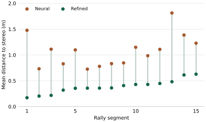

从像素到球路 Pipeline
TrackNetV3 使用作者公开权重生成候选球点。系统结合球点、13 个球场标志点、24 × 24 灰度裁片和热图生成三维预测，再以这条轨迹为软约束，联合拟合飞行状态、阻力和击球时刻。
Monocular Trajectory Reconstruction with Local Appearance,
Rally-Level Modeling, and Physical Refinement
从一部手持手机的视频，重建羽毛球整回合的三维轨迹。
RESEARCH QUESTION
高远球需要拍下整个球场，画面里的球往往只剩几个模糊像素。乒乓球的台面反弹可以提供深度线索，羽毛球在两次击球之间却没有这样的已知接触面。MonoTrack 用球员姿态提出击球分段，拟合结果依赖分段和起点。时序网络能补全漏检，但输出的深度仍可能与原片中的球点不一致。我们的出发点是让网络先给出完整球路，再允许原始图像观测和飞行动力学共同修改它。
METHOD
一帧球点只给出视线方向。FeatherTrace3D 用局部外观和整回合运动估计深度，再以图像观测、击球时刻和飞行动力学校正轨迹。
TrackNetV3 使用作者公开权重生成候选球点。系统结合球点、13 个球场标志点、24 × 24 灰度裁片和热图生成三维预测，再以这条轨迹为软约束，联合拟合飞行状态、阻力和击球时刻。
主网络先在最多 192 帧的窗口内编码运动，再让整回合的观测相互关联，补足漏检帧。共享的修正网络把预测投回原画面，比较球点偏差，迭代五轮后沿视线稳定轨迹。
预训练记录了 690,625 次更新，用时包括在线渲染、限载等待、保存和验证。后续的时序适配和全网络微调分别更新 300,000 和 50,000 次。两轮对照实验的合计用时分别为 11.32 和 9.40 小时，各自包含准备、多个配置和验证。
GPU 计时从输入张量就绪开始，到五轮修正结束。物理优化器则固定网络权重，用每个回合自身的观测估计飞行状态、共享阻力和击球时刻。论文主表在 56 个渲染回合上另测了网络到物理拟合的总耗时，单核 CPU 平均为 1.7 秒/回合，检测和标定另计。精度评估还包含 15 段实拍，其中 1,600 帧与独立双目参考配对。
CONTRIBUTIONS
球消失的几帧，仍然属于同一条轨迹。我们把可见时留下的形状和拖影，与击球前后的运动放在一起，预测回合中每一帧的位置。
两个检测点可以位于同一像素，周围的亮斑大小和拖影却不同。三层卷积编码 24 × 24 灰度裁片与检测热图。裁剪中心和尺度另行输入，让网络知道裁片在原画面里有多大。漏检帧保留时间位置，并以掩码标记。
前两层注意力观察最长 192 帧的局部窗口，后两层关联整个回合。共享修正器将预测投回图像：可见帧的二维残差为 rₜ = mₜ(yₜ − π(pₜ))。同一个网络用该残差更新五轮，随后沿视线稳定轨迹。
三组随机种子，每种模型用 1,024 个仿真回合从头训练，在相同的 48 个回合上测试。表中是平均三维距离。
| 网络输入 | 神经预测 | 物理拟合后 |
|---|---|---|
| 单帧坐标 | 1.580 m | 0.777 m |
| 时序坐标 | 1.152 m | 0.627 m |
| 时序＋对齐外观 | 0.779 m | 0.602 m |
| 时序＋打乱外观训练 | 1.195 m | 0.637 m |
用论文模型测试 56 个渲染回合时，仅打乱裁片与热图的帧序，神经误差增加 0.115 m（95% 区间 0.005 至 0.225）。物理拟合后增量为 0.017 m，区间跨零。
网络贡献在哪里？ 对齐外观让神经误差从 1.152 降到 0.779 米；打乱对应关系后为 1.195 米。论文主表中，稳定后的网络在所比较的学习预测器中平均误差最低。用它初始化并约束拟合，56 个渲染回合全部收敛。
击球分错一帧，两段飞行就可能接错。我们把击球事件也作为待估变量，让原视频里的二维球点决定哪些分段值得保留。
每段飞行满足重力和二次阻力，p′ = v，v′ = g − k‖v‖v。相邻两段在击球处约束位置衔接，速度可以突变。候选击球取自二维轨迹转向与网络轨迹折返。增加、删除或平移击球时刻后，只有总目标下降才接受修改。
网络同时提供初值和软约束，在漏检期间保留深度线索。有观测时，鲁棒重投影项允许物理轨迹偏离网络预测。单核 CPU 拟合一个渲染回合约需 1.6 秒。
三行均使用相同的神经初值和软约束，平均三维误差以米计。
| 允许的击球编辑 | 24 回合 | 32 回合 |
|---|---|---|
| 时刻固定 | 1.294 | 1.166 |
| 可调整时刻 | 0.749 | 0.768 |
| 可增删并调整 | 0.378 | 0.589 |
合并 56 个渲染回合后，仅用稳定后的网络为 1.274 米，同一拟合器从几何初值出发为 1.241 米，完整方法为 0.498 米。
同一条二维曲线可以由深度不同的轨迹投影而成。已知重力能排除整体缩放，观测持续多久、像素有多准，共同决定剩下的深度不确定性。

在近似恒深、忽略阻力的单段飞行中，固定帧率和其他条件，可见时长翻倍，深度标准差约降至原来的 18%。
我们先问哪些三维轨迹会产生完全相同的像素，再问即使飞行模型正确，带噪声的像素允许把深度估到多准。
整条轨迹沿视线缩放 s 倍，像素仍重合。相机中心、重力和时间戳固定时，将两条飞行方程相减，再与速度做叉积，沿速度方向的阻力项就消去了。只要球曾横向飞行，就有
忽略阻力、深度近似恒定时，重力造成的像素弯曲随时长 T 的平方增长。均匀采样且像素噪声独立时，多看 N 帧还带来 √N 的收益。固定帧率下 N 与 T 成正比。
固定 30 帧/秒、深度 20 米、焦距 1,313 像素、像素噪声 2 像素、横向重力约 9 米/秒²。这里单独演示无阻力近似。
同样是 30 厘米误差，放在清晰长飞行和大段漏检的回合里，含义可能很不一样。我们用每个回合自己的相机、可见帧和像素噪声，算出一把以米计的尺子。
θ 包含各段飞行状态、共享阻力和击球时刻。在给定击球事件结构附近，用含阻力的动力学得到位置 pₜ，再投影到相机。只把可见帧集合 V 中的球点堆叠成 y。
H 的每一列表示一个参数微调后，可见球点会移动多少。在已知且与 θ 无关的噪声协方差 Ω 下，高斯似然的梯度 s 描述数据对参数的敏感度。对梯度外积取期望，得到 Fisher 信息。
Gₜ 描述同一组参数变化会让目标帧的三维位置移动多少。若有某个方向能移动球、却完全不改变像素，观测无法给该方向提供有限精度界。对可估目标，局部无偏估计满足协方差下界。
对每帧的位置协方差下界取迹，相当于把三个坐标方向的方差相加。对 M 个目标帧取平均再开方，得到 B。实测误差也用同一组目标帧算 RMSE，然后逐回合相除。
† 表示伪逆。仅使用像素时，最后一步取 I = Iobs。渲染实验还计入模拟器共享阻力系数的先验信息。实拍则在拟合轨迹处代入估算。这个比值衡量实测误差离该回合的局部参照有多远，使用图像和学习先验的模型也可能低于该参照。对照逐回合实测值
把相机参数 γ 与飞行参数 θ 联合估计。若标定信息块可逆，消去 γ 后的有效信息为
减去的项为半正定矩阵。因此相机参数越难确定，仅凭球点可利用的轨迹信息至多维持原值。论文的渲染下界把给定相机视为准确。
| 场景 | RMS 下界（米） | 实测 RMSE（米） | 逐回合比值中位数 |
|---|---|---|---|
| 匹配渲染 · 28 回合 | 0.164 | 0.264 | 1.37 倍 |
| 失配渲染 · 28 回合 | 0.406 | 1.080 | 2.80 倍 |
| 全部渲染 · 56 回合 | 0.285 | 0.672 | 1.95 倍 |
| 实拍 · 15 段，代入估计 | 0.233 | 0.502 | 3.97 倍 |
渲染下界在仿真轨迹处计算，把给定相机参数视为准确。实拍下界在拟合解处代入估计，实测偏差以 B/C 双目轨迹为参照。主表的 0.398 米按配对帧平均距离计分，此处实拍 0.502 米先对每段计算 RMSE，再对 15 段平均。
差距从哪里来？在其中 24 个渲染回合上，依次提供真实击球时刻、真实相机参数和模拟器阻力定律，RMSE/下界的中位数从 1.87 变为 1.96、1.55 和 1.13。相机标定和阻力失配解释了这组实验中相当一部分差距。
即使轨迹在输入画面里对准了球，沿视线的误差也可能很大。我们让手持手机 A 独立完成推理，再用两部固定手机从另外两个角度核查深度。
手机 A 拍摄前先标定球场，逐帧对齐场线来补偿手持旋转。固定手机 B、C 对同一颗球三角化，仅保留重投影残差低于 3 像素、视线夹角大于 15°、传播标准差小于 0.15 米的参考点。
12 个录制窗口切出 15 段，共 2,415 帧。1,600 帧有可用双目参考。网络稳定后的平均参考偏差为 1.078 米，物理拟合后为 0.398 米，15 段均改善。参考值本身仍受手机标定与同步误差影响。

EXPERIMENTS
| 方法 | 模型匹配 | 模型失配 | 全部渲染 | 实拍参考偏差 |
|---|
所有方法共用检测与标定。学习基线在同一羽毛球适配协议下重训，各模型的预训练经历不同。MonoTrack core 采用自带击球候选及假设端点平面；oracle 额外获知击球帧与端点。
FOLLOW-UP / 2026.11.20
论文主表把完整管线与 TT4D 的神经输出比较。为检验网络本身的贡献，后续实验也把 TT4D 的输出送入同一个冻结的物理拟合器，并检验增加击球候选是否有帮助。
| 相同物理拟合器 | 渲染误差 | 实拍参考偏差 |
|---|---|---|
| FeatherTrace3D · 论文 v6.5 | 0.498 m | 0.398 m |
| FeatherTrace3D · 增加击球候选 | 0.475 m | 0.410 m |
| TT4D ＋ 同一拟合器 | 0.467 m | 0.393 m |
44 个开发回合选定规则。评估沿用 56 个渲染回合与 15 段实拍，其中渲染集此前参与过假设形成。
增加候选击球时刻改善了渲染结果，实拍参考偏差略升。该变体与 TT4D 同拟合器的渲染配对差约 0.009 m，95% 区间为 −0.088 至 +0.109 m。现有对照尚不能确立网络间的优势。

在预先固定的 24 个新仿真回合上，两种方法均使用准确标定与实际检测点，平均三维误差为 44.0 和 42.7 厘米；配对差为 +1.3 厘米，95% 区间为 −6.3 至 +8.7 厘米。15 段实拍的 1,600 个配对帧上，两者相对双目参考的平均偏差为 39.8 和 39.3 厘米。现有精度仍不足以区分两种网络在同一拟合器下的整体表现。
DISCUSSION
本次实拍来自同一场地、同一次录制。B、C 两部手机的标定和同步误差会计入偏差。下一步可用测量控制点或动捕独立核查参考精度。
超过 2 秒的检测空白更依赖网络先验。目前逐帧标定主要补偿固定相机中心附近的旋转。跨场馆、侧向视角和明显平移仍需独立验证。